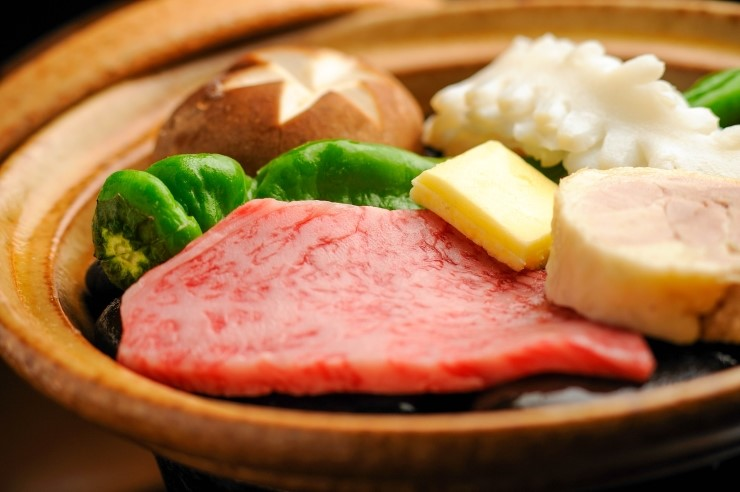
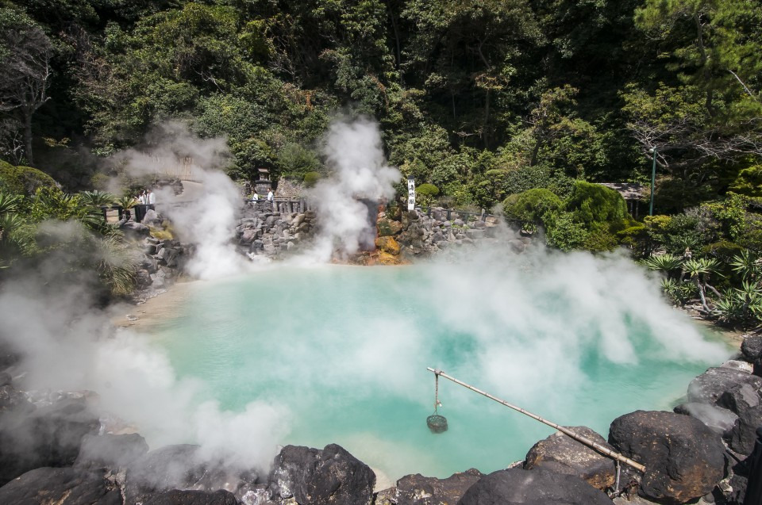
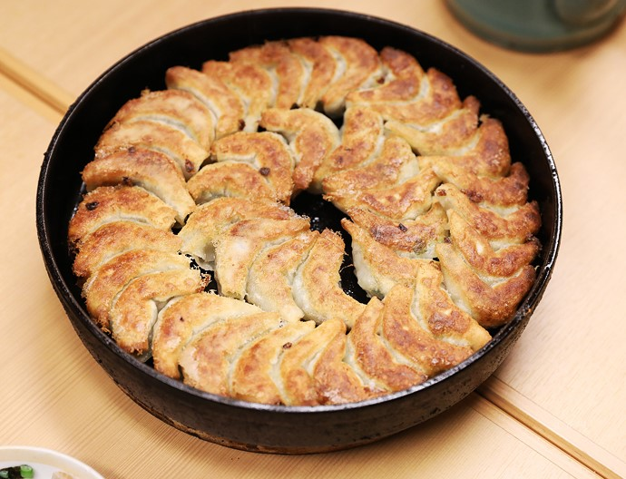
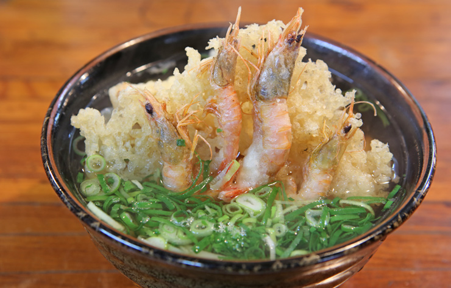

일본 3대 성중 하나 구마모토성!
일본 3대 명성 중 하나인 구마모토 성은 일명 은행 나무 성이라고도 불리며 명장 가토 기요마사에 의해서 1601년 착공되어 7년이라는 시간에 걸쳐 축성되었습니다. 성곽의 넓이는 약 98만㎡, 주위 약 5.3킬로미터(축성 당시), 그 안에 3개의 천수각, 49개의 망루, 18개의 누문, 29개의 성문을 가진 크고 웅장한 모습으로, 아름다운 곡선으로 쌓아 만든 돌담과 자연 지형을 이용한 독특한 축성 기술을 잘 살린 성입니다. 가쓰 가이슈는 다른 성과 비교할 데가 없다. 외주가 가장 넓고 성곽은 높으며 견고 하다."라며 감탄했습니다. 1877년의 서남 전쟁에서는 사이고 다카모리가 이끄는 사쓰마군을 상대로 50일 남짓 농성하여, 난공불락의 성으로서 진면목을 발휘했지만 총공격 전날에 원인 불명의 실화로 우도 망루 외 12동을 남기고 소실되었습니다. 현재의 천수각은 1960년 가토 기요마사의 350년제와 시제 70주년을 기념하여 구마모토시에 의해 재건된 것입니다. 벚꽃의 명소로도 유명하고 산벚 나무, 히고 벚나무, 왕벚 나무의 3종류•약 600그루의 벚꽃이 흐드러지게 피어, 기간 중은 10만 명 이상의 인파로 붐빕니다. 벚꽃의 개화에 맞추어 야간 개방도 실시하는데 라이트업된 성에 밤 벚꽃이 아름답게 비칩니다. 개화 시기는 3월 하순부터 4월 초순 경입니다. 2008년에는 혼마루고텐이 완성되어 한층 더 매력을 더하고 있습니다.

살아숨쉬는 화산 아소 화산
아소산은 일본 최초의 국립 공원이자 세계최대급의 갈데라 화산으로 10만년전 화산 대폭팔로 만들어졌다 활화산 정상의 분화구에는 모락모락 연기가 피어오르며 유황냄새를 맡을 수있다. 아소에는 바공기를 뒤집은 형태의 심비의산 고메즈카, 드넓은 초원에 호수와 말떼들이 인상적인 구사센리가하마, 에메랄드 마그마를 볼 수있는 나카다케등 살아있는 대자연의 숨결을 몸소 느낄 수 있다.

부글부글~ 뱃푸 지옥온천
일본 온천용출량을 자랑하는오이타현의 벳부지옥 온천은 약 1300년전 츠루미다케 화산 폭발로 만들어져 벳푸 관광의 하이라이트라 할 수 있다. 썹씨 100도의 열탕이 제 각각 다양한형태로 끓어오르는 모습이 마치 지옥과 같은 풍경을 연상케 한다 하여 지옥 온천이라 불린다.큐슈 꼭 먹어야하는 음식

일본하면 역시 소! 사가규
일본하면 역시 규 요리를 빼놓을 수 없어요. 특히 큐슈를 대표하는 소고기인 사가규는 사가현을 방뭄했다면 꼭 먹어봐야하는 맛이죠 사가현의 온화한 기후와 꺠끗한 물 그리고 맑은 공기 속에서 자란 소로만 만들어진 사가규는 일본 전국적으로도 알아주는 이름값 있는 소고기중 하나랍니다. 부드러운 고기 속에서 가늘게 지방이 썩이 질 좋은 사가규는 스테이크를 먹어도 좋고, 샤브샤브를 해서 먹어도 좋답니다.

빈대떡같이 생긴 교자!
교자는 일본의 군만두로 후쿠오카의 '히토쿠치 교자'는 한입에 먹을 수 있는 군만두를 뜻한다. 후쿠오카에서는 라멘을 먹을 때 함께 먹는 사이드메뉴 또는 술안주로 먹는 경우가 많다. 히토쿠치 교자 맛집으로는 철제 냄비 교자의 원조로 알려진 '하카타 기온 테츠나베'가 있다. 저렴한 가격이 매력적인 곳 그리고 교자만두의 맛도 일품인 곳 저녁무렵엔 현지인들이 워낙 많이 방문해서 첫날에 기다리다 지쳐 다음날은 조금 일찍 서둘러 방문했는데도 대기줄이 있을만큼 인기있는 곳입니다. 시원한 맥주와 여러가지 안주와 배불리 먹어도 부담없는 곳 하카타에 숙박하신다면 들려보시길 추천합니다.

뜨끈뜨끈 맛있는 우동
우동(饂飩)이라는 이름은 중국에서 다양한 밀가루 요리를 지칭하는 훈툰(餛飩)[3]이 일본식으로 변화한 것으로 보는 것이 정설이다. 일본 내에서는 당나라에서 일본으로 우동이 전래되었다고 하지만 실제 증거는 희박하다.20세기 등장한 라멘이나 교자(만두) 등과는 달리 우동은 과거부터 먹어오던 전통적인 음식이었다. 우동의 기원인 중국 화북지방에서 밀은 흔한 곡식이지만, 일본의 풍토에서는 키우기 어렵고 귀한 작물이었다. 따라서 우동은 귀한 밀의 맛과 향기를 오롯이 즐기기 위한 아주 고급스러운 음식이었다. 때로는 밀 대신 메밀 등으로 대체 음식을 해먹었는데 그것이 바로 소바이다. 지금이야 밀 보다는 메밀의 향을 즐기는 사람이 더 많고 음식의 가격과 품격도 소바가 더 높지만, 예전에는 아니었다. 그러나 1950년대 이후 미국의 원조 등으로 밀가루가 흔해지면서 우동은 슬슬 라멘, 교자 등과 함께 서민적인 음식으로 자리잡았다.